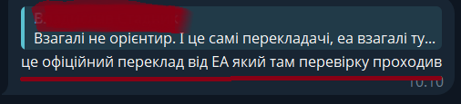
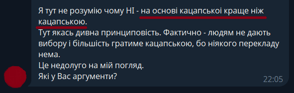
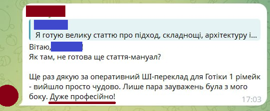
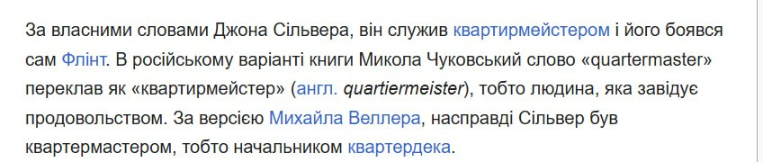
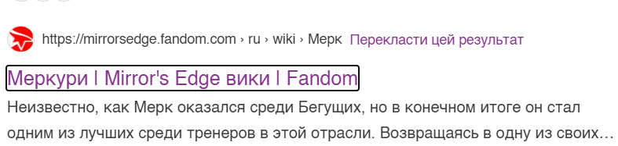
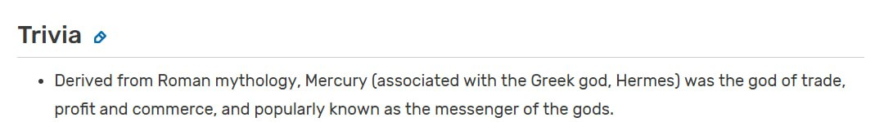
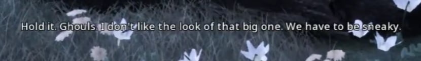
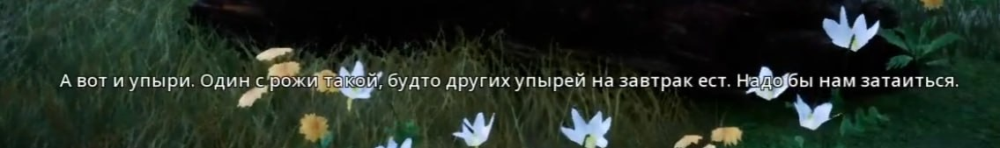

Проблеми перекладання з російської
Якість
На жаль, не зважаючи на те, що ми давно робимо свої переклади, які не чим не гірше і часто навіть краще за російські (пошукайте в Youtube приклади порівнянь російського та українського озвучення в фільмах), в наших людях досі сидить ота стара добра меншовартісність, ніби треба рівнятись на росіян, бо у них апріорі якість. Що далеко не завжди відповідає правді. Ті, хто навіть не довіряв самим росіянам, довіряли (чомусь) розробникам, бо офіційний же переклад має проходити перевірки якості...

Тільки питання, а хто і як окрім самих росіян перевірятиме їх переклад, і де гарантія того шо вони десь не наплужили і не спустили на «похер»?
Така мені попалась людина, що визвалась зі мною перекладати Mirrors Edge Catalyst. Ні, дякую, я мабуть таки сам...
А ось ще чудовий момент, коли (вже інша) людина не розуміє що взагалі не так з перекладами з російської:

На основі кацапської це краще ніж кацапською?
Що? Це як? Люди не розуміють того, що вони буквально ПРОДОВЖУЮТЬ ГРАТИ РОСІЙСЬКОЮ, ПРОСТО УКРАЇНСЬКИМИ ЛІТЕРАМИ.
До речі, ця ж сама людина не розуміла, чому погано, коли (в тому числі її) переклад ставиться поверх російської мови (накручування українцями статистики росіянам).
Що цікаво — ця ж сама людина грала в "дякулу" перед автором машинного перекладу ремейка Gothic:

Про професійність цього перекладу ви можете/могли побачити кілька прикладів на сторінці машинних перекладів
А виходить так, що людина, яка не розуміє, що не так з перекладами з російської, дякує неякісному ШІ-слопу і називає його професійним
Цікавий збирається контингент навколо ШІ...
Приклади неякісних варіантів перекладу
1) Росіяни не розібрались в значенні терміна і використали зовсім неправильний, взято з Вікі:

2) В російській версії Вікі для Mirror's Edge персонаж Меркурій (Mercury) у них підписан як... Меркурі. Це вам не Фредді Меркурі, агов.

При тому, що Вікі прямо каже про походження нікнейму:

Тобто явно від стародавнього БОГА МЕРКУРІЯ. Але ж в росіян завжди все не як у людей. В оригінальній локалізації гри 2008 року, де є цей персонаж, вони просто не використовували його повне ім'я і всюди писали Мерк (хоча буквально 1-2 рази повне ім'я зустрічалось.)
3) Якщо попередня помилка була на рівні фандомної Вікі, то ось, будь ласка — приклад з офіційної російської локалізації Clair Obscur: Expedition 33:

Що у нас тут? На швидку руку щось на кшталт...
Стривайте. Упирі. Не подобається мені, який має вигляд той здоровило. Треба залишатись непомітними.
Що зробили росіяни?

Росіяни не бачуть свого існування без того, щоб не висказати на щось свою зневагу
Культура/менталітет
Будь яка медіа/культурна діяльність — відображення того, хто цю культуру створює
Приклади культурних проявів в перекладах
1) Приклад з офіційної російської локалізації Clair Obscur: Expedition 33:
Що у нас тут? На швидку руку щось на кшталт...
Стривайте. Упирі. Не подобається мені, який має вигляд той здоровило. Треба залишатись непомітними.
Що зробили росіяни?
Росіяни не бачать свого існування без того, щоб не висказати до чогось свою зневагу.